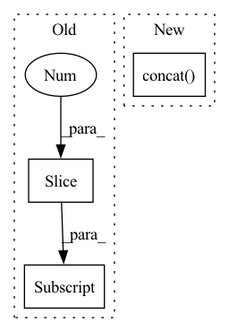

Pattern ID :31543
Before Change
mask = tf.zeros([height, width]).numpy() // need to assign values
mask_value = 0 // value is ignored
for hh_start, hh_end in zip(hh_split[:-1], hh_split[1:]):
for ww_start, ww_end in zip(ww_split[:-1], ww_split[1:] ):
mask[hh_start:hh_end, ww_start:ww_end] = mask_value
mask_value += 1
mask = tf.convert_to_tensor(mask)After Change
rr = [tf.zeros([hh, ww_split[id + 1] - ww_split[id]]) + (id + mask_value) for id in range(total_ww)]
mask.append(tf.concat(rr, axis=-1))
mask_value += total_ww
mask = tf.concat( mask, axis=0)
// return mask
mask = tf.reshape(mask, [height // window_height, window_height, width // window_width, window_width])
mask = tf.transpose(mask, [0, 2, 1, 3])In pattern: SUPERPATTERN
Frequency: 3
Non-data size: 3
Instances Fragment ID: 92220255
Project Name: leondgarse/keras_cv_attention_models
Commit Name: bcd22fc3dc9889d71afdf773b78b74d3211754be
Time: 2022-04-06
Author: leondgarse@gmail.com
File Name: keras_cv_attention_models/swin_transformer_v2/swin_transformer_v2.py
M Class Name: AnonimousClass
N Class Name: AnonimousClass
M Method Name: make_window_attention_mask(6)
N Method Name: make_window_attention_mask(6)
M Parent Class:
N Parent Class:
M File Name: keras_cv_attention_models/swin_transformer_v2/swin_transformer_v2.py
N File Name: keras_cv_attention_models/swin_transformer_v2/swin_transformer_v2.py
M Start Line: 111
M End Line: 119
N Start Line: 110
N End Line: 118
Before Change
anchors_hw = anchors[:, 2:] - anchors[:, :2]
anchors_center = (anchors[:, :2] + anchors[:, 2:]) * 0.5
bboxes_center = preds[:, :2] * anchors_hw + anchors_center
bboxes_hw = tf.math.exp(preds[:, 2:4]) * anchors_hw
preds_top_left = bboxes_center - 0.5 * bboxes_hwAfter Change
else:
preds_top_left = bboxes_center - 0.5 * bboxes_hw
pred_bottom_right = preds_top_left + bboxes_hw
return tf.concat( [preds_top_left, pred_bottom_right, preds_others], axis=-1)
def assign_anchor_classes_by_iou_with_bboxes(bbox_labels, anchors, ignore_threshold=0.4, overlap_threshold=0.5):
num_anchors = anchors.shape[0] Fragment ID: 92220252
Project Name: leondgarse/keras_cv_attention_models
Commit Name: 0105d064e05e7d2f4ce9d669ffeb8de9c40ef848
Time: 2022-03-29
Author: leondgarse@gmail.com
File Name: keras_cv_attention_models/coco/anchors_func.py
M Class Name: AnonimousClass
N Class Name: AnonimousClass
M Method Name: decode_bboxes(3)
N Method Name: decode_bboxes(2)
M Parent Class:
N Parent Class:
M File Name: keras_cv_attention_models/coco/anchors_func.py
N File Name: keras_cv_attention_models/coco/anchors_func.py
M Start Line: 162
M End Line: 173
N Start Line: 159
N End Line: 179
Before Change
source_pp = source_layer["positional_embedding:0"] // weights
else:
source_pp = source_layer.pp // layer
self.pp.assign(tf.image.resize(source_pp, self.pp.shape[1:3] , method=method))
def show_pos_emb(self, rows=16, base_size=1):
import matplotlib.pyplot as pltAfter Change
tt = tf.image.resize(ss, [self.height, self.width], method=method)
tt = tf.reshape(tt, [1, self.height * self.width, -1])
tt = tf.concat( [source_pp[:, :-hh * ww], tt], axis=1) // If has cls_token
else:
tt = tf.image.resize(source_pp, [self.height, self.width], method=method)
self.pp.assign(tt) Fragment ID: 92220259
Project Name: leondgarse/keras_cv_attention_models
Commit Name: 8776edc81f38b435615eee79514c4b7b8b88fc67
Time: 2023-01-10
Author: leondgarse@gmail.com
File Name: keras_cv_attention_models/volo/volo.py
M Class Name: PositionalEmbedding
N Class Name: PositionalEmbedding
M Method Name: load_resized_weights(3)
N Method Name: load_resized_weights(3)
M Parent Class: keras.layers.Layer
N Parent Class: keras.layers.Layer
M File Name: keras_cv_attention_models/volo/volo.py
N File Name: keras_cv_attention_models/volo/volo.py
M Start Line: 209
M End Line: 209
N Start Line: 216
N End Line: 226